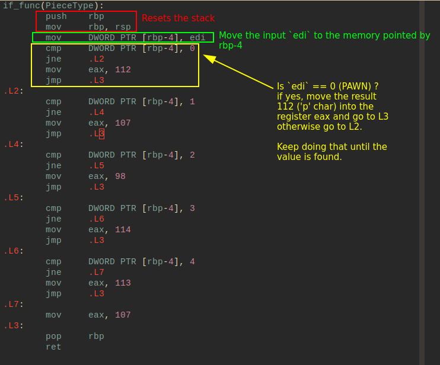
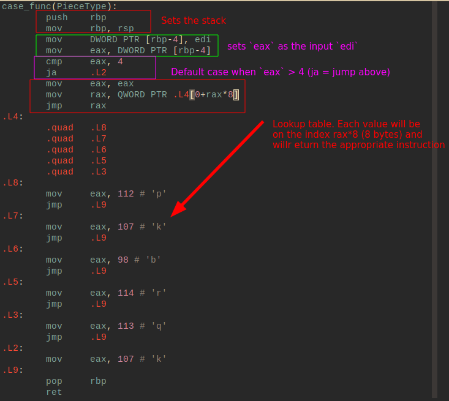
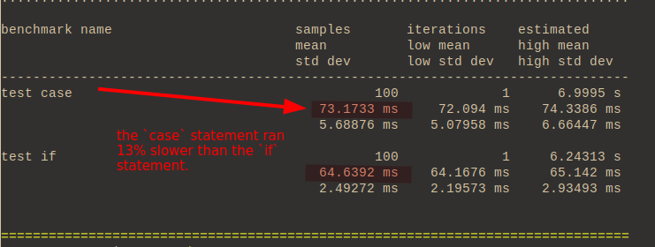
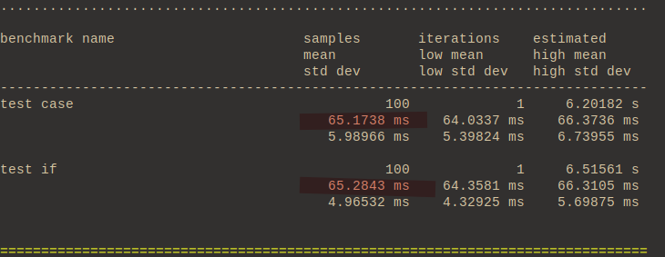
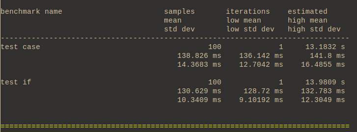
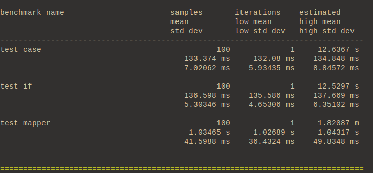

March 06, 2023
There're a many misconceptions about how if and case statements are
compiled, and how they perform. As those statements grow large (20+
lines) code-reviewers commonly recommend refactoring the conditional chains
into a mapper to improve code clarity.
So the idea here is to check whether or not the code is cleaner, and how much we pay in performance in order to have "cleaner" (TBD) code.
Let's start with a simple example. Say you're developing a game of chess and
you need to return a char representation of the chess piece at hand. Easy:
enum Pieces {PAWN, KNIGHT, BISHOP, ROOK, QUEEN, KING};
Our first function will use if statements:
char if_func(PieceType piece) {
if (piece == PAWN) { return 'p'; }
if (piece == KNIGHT) { return 'k'; }
if (piece == BISHOP) { return 'b'; }
if (piece == ROOK) { return 'r'; }
if (piece == QUEEN) { return 'q'; }
return 'k';
};
And here is another example using case statements.
char case_func(PieceType piece) {
switch(piece) {
case PAWN: return 'p';
case KNIGHT: return 'k';
case BISHOP: return 'b';
case ROOK: return 'r';
case QUEEN: return 'q';
default: return 'k';
}
};
Before going any further, let's compare the assembly code generated from these two functions.
Firstly, let's start with the assembly code for the if statement version:

Very straightforward. Store the input value in a register, compare with the
integers corresponding to the enum (0, 1, 2, 3, 4, 5) in a sequence and spit
out the equivalent char (as an int).
How does this compare to the case statement?

The case statement seems more complicated for the programmer unfamiliar with
Assembly language. However, the code is just a producing a lookup table.
Before proceeding to the "clean" code approach, let's run some benchmarking to see how the if statement compares to the case one.
Our test bench will look like this:
#include <catch2/catch.hpp>
std::vector<PieceType> pieces = {PAWN, KNIGHT, BISHOP, ROOK, QUEEN, KING};
void test_if() {
for (int i = 0; i < 1000000; i++) {
for (const auto &piece : pieces) {
if_func(piece);
}
}
};
void test_case() {
for (int i = 0; i < 1000000; i++) {
for (const auto &piece : pieces) {
case_func(piece);
}
}
};
TEST_CASE("IF vs CASE") {
BENCHMARK("test case") { return test_case(); };
BENCHMARK("test if") { return test_if(); };
}
We will run through the vector one million times for each sample, and then we'll analyse how they compare.

This is an unfortunate scenario for our case statement. Lookup tables get
better as the number of different cases raises. But in this function we only
have a few cases and their occurrence is evenly distributed due to the way
the benchmark code was set. That's why our if statement with many cmps and
jmps somehow managed to perform better.
In other words, the worst case scenario for our if statement (when it
receives a 'king' and it needs to jump all the way down the assembly
instruction chain) only happens 1 out of 6 times. Whereas the case function
needs to always use the lookup table no matter what.
I used this example on purpose, because generally speaking developers say that
case statements are faster than if statements. While this is true for many
scenarios, this isn't always true.
If we had cherry picked our vector of pieces to only contain Kings, the result would be different. Consider substituting this line:
// std::vector<PieceType> pieces = {PAWN, KNIGHT, BISHOP, ROOK, QUEEN, KING};
std::vector<PieceType> pieces = {KING, KING, KING, KING, KING, KING};
The results are quite different as we've reached the worst case scenario more times.

Now we finally reached equivalence by unbalancing our sampling data. In real life it will be difficult to tell how the distribution of our samples will look like, so why don't we run this example with a Gaussian distribution?
// std::vector<PieceType> pieces = {KING, KING, KING, KING, KING, KING};
std::vector<PieceType> pieces = {
PAWN,
KNIGHT, KNIGHT,
BISHOP, BISHOP, BISHOP, BISHOP,
ROOK, ROOK, ROOK, ROOK,
QUEEN, QUEEN,
KING,
};
That looks fair! Let's see the results:

With 6 different variables to switch from, our if statement is comparable to
a case statement. For anything less than that, if statements will usually
be faster, and for anything more than that, they will usually be slower.
I'm being really picky here, in real-life situations this difference probably doesn't matter, but now you know.
Let's have a brief pause on benchmarking here to talk about something that happens in my daily at my job.
A code reviewer will look at our if or case function and will block the
Pull Request saying:
Mmmm, this doesn't look super clean. Can we move it to a mapper instead?
So you end up with something like this:
std::unordered_map<PieceType, char> mapper = {
{PAWN, 'p'},
{KNIGHT, 'k'},
{BISHOP, 'b'},
{ROOK, 'r'},
{QUEEN, 'q'},
{KING, 'k'},
};
char mapper_func(PieceType piece) {
return mapper[piece];
}
So much cleaner, right?! The reviewer will be happy that you reduced a
monstrous chain of if (or case) statements into a single, clean, 1 line
function.
More over, a common argument is that "it's easier to test, and therefore to obtain high coverage". And indeed, it's easy to obtain coverage if all you're doing is making sure that the return line is hit, but if you want to have real coverage that branches out to all paths, your test will actually look identical for either case.
In reality I haven't seen any substantial evidence to actually convince me that this is indeed cleaner or more useful - and it will most likely come down to personal preference, which is unfortunate for the reviewer and for the person who created the PR.
But the central question still is: why use a full on hash table just for looking up 6 different values? Isn't this too overkill? Does the clean code excuse really matters here? Is the alternative if or case statement even "dirty"?
Let's see how this performs. We'll add another benchmarking using this new mapper function and rerun the code.
void test_mapper() {
for (int i = 0; i < 1000000; i++) {
for (const auto &piece : pieces) {
mapper_func(piece);
}
}
};
// ...
BENCHMARK("test mapper") { return test_mapper(); };
// ...

This is too slow! We are running almost 10x slower now on our "clean" code approach. This is obvious, we don't need a hash table here, we're just returning based on a enum of 6 different types.
switch/case statements, otherwise if is fine.#define CATCH_CONFIG_MAIN
#define CATCH_CONFIG_ENABLE_BENCHMARKING
#include <catch2/catch.hpp>
#include <vector>
#include <unordered_map>
enum PieceType {PAWN, KNIGHT, BISHOP, ROOK, QUEEN, KING};
std::unordered_map<PieceType, char> mapper = {
{PAWN, 'p'},
{KNIGHT, 'k'},
{BISHOP, 'b'},
{ROOK, 'r'},
{QUEEN, 'q'},
{KING, 'k'},
};
char mapper_func(PieceType piece) {
return mapper[piece];
}
char if_func(PieceType piece) {
if (piece == PAWN) { return 'p'; }
if (piece == KNIGHT) { return 'k'; }
if (piece == BISHOP) { return 'b'; }
if (piece == ROOK) { return 'r'; }
if (piece == QUEEN) { return 'q'; }
return 'k';
};
char case_func(PieceType piece) {
switch(piece) {
case PAWN: return 'p';
case KNIGHT: return 'k';
case BISHOP: return 'b';
case ROOK: return 'r';
case QUEEN: return 'q';
default: return 'k';
}
};
#include <catch2/catch.hpp>
/* std::vector<PieceType> pieces = {PAWN, KNIGHT, BISHOP, ROOK, QUEEN, KING}; */
std::vector<PieceType> pieces = {
PAWN,
KNIGHT, KNIGHT,
BISHOP, BISHOP, BISHOP, BISHOP,
ROOK, ROOK, ROOK, ROOK,
QUEEN, QUEEN,
KING,
};
void test_if() {
for (int i = 0; i < 1000000; i++) {
for (const auto &piece : pieces) {
if_func(piece);
}
}
};
void test_case() {
for (int i = 0; i < 1000000; i++) {
for (const auto &piece : pieces) {
case_func(piece);
}
}
};
void test_mapper() {
for (int i = 0; i < 1000000; i++) {
for (const auto &piece : pieces) {
mapper_func(piece);
}
}
};
TEST_CASE("IF vs CASE vs MAP") {
BENCHMARK("test case") { return test_case(); };
BENCHMARK("test if") { return test_if(); };
BENCHMARK("test mapper") { return test_mapper(); };
}